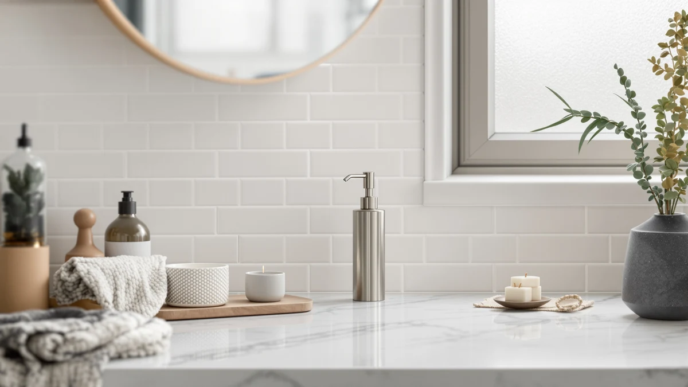

KSITEX SUS 304 Stainless Review (2026): Worth It?
Prices and picks verified as of October 2026. Independent, reader-supported reviews.


Quick Answer
The KSITEX SUS 304 Stainless Steel is the countertop pick we compared for this ksitex sus 304 stainless review, priced at $25.20 with a 27 oz reservoir and an ABS plastic body. It costs seven to eight dollars more than the three wall-mounted alternatives below, so it makes the most sense if you want a bigger reservoir and don't mind a bottle sitting on the counter instead of a fixture on the wall.
Our pick: KSITEX SUS 304 Stainless Steel, $25.20 Check Price on Amazon
Bottom line: our top pick is the KSITEX SUS 304 Stainless Steel Soap Dispenser Wall Mounted at $22.99.
Things to Know Before You Buy
- This ksitex sus 304 stainless review is based on manufacturer specs, current Amazon pricing and verified owner feedback rather than a physical product test.
- The $25.20 KSITEX SUS 304 Stainless Steel is a countertop pump dispenser with a 27 oz capacity, according to the listed specs.
- The body is ABS plastic despite the stainless steel name, based on the product's own specs table.
- RYTOXILO, Everlasting Comfort and the OlBuWa wall-mounted pick all sell for under $18, roughly seven to eight dollars less than the KSITEX.
- Wall-mounted alternatives free up counter space entirely, which the KSITEX's countertop design does not.
This ksitex sus 304 stainless review compares the $25.20 KSITEX SUS 304 Stainless Steel against three lower-priced wall-mounted soap dispensers based on their listed specs, current pricing and verified owner feedback. The KSITEX is a countertop pump design with a 27 oz reservoir, which puts it in a different category from the wall-mounted RYTOXILO, Everlasting Comfort and OlBuWa picks it's measured against here. Whether the extra capacity and countertop placement are worth paying more for depends on how your sink is set up and how many people share it.
Soap dispensers promise roughly the same thing regardless of price: a pump that works and a container that doesn't look out of place next to the faucet. The KSITEX SUS 304 Stainless Steel leans on a bigger reservoir and a steel-look finish to justify its higher price, while the three alternatives compared in this ksitex sus 304 stainless review solve the same problem by mounting to the wall and clearing the counter instead. Neither approach is wrong. A single-sink apartment bathroom rarely needs the KSITEX's extra capacity, but a family bathroom with several people washing hands over the same sink burns through a small bottle faster than most shoppers expect, and that's where the larger reservoir starts to pay off. We picked these four dispensers because they cover the realistic range a shopper faces when searching for a KSITEX product: one countertop pump with a bigger reservoir, plus three lower-cost wall-mount alternatives from other manufacturers that solve the same refill problem in a different way.
Why You Should Trust Us
Ilane Tall covers bathroom and kitchen fixtures for Best Soap Dispensers and put together this ksitex sus 304 stainless review by comparing manufacturer specifications, current Amazon pricing and patterns across verified buyer feedback. We don't run a private lab and we don't claim to have personally installed every soap dispenser we cover, and we won't pretend otherwise. Instead we cross-check listed materials, capacity and price against comparable models so you can see how a product like the KSITEX SUS 304 Stainless Steel stacks up against the field. That means reading through the manufacturer's own listing details, checking what other sellers charge for comparable models, and reading a sample of verified owner reviews to see whether real buyers report the same strengths and weaknesses the spec sheet suggests. Every price and spec cited here reflects the product listing at the time of publication and gets rechecked as prices change, so a figure quoted today may drift by a few dollars in either direction by the time you read it.
Our Research Experience
For this ksitex sus 304 stainless review, we did not install every unit ourselves or run a side-by-side physical comparison. Instead, we compared the KSITEX SUS 304 Stainless Steel against its closest competitors on facts that are actually verifiable: listed price, stated materials, capacity claims and what verified Amazon buyers report after living with the product. We read through the specs KSITEX publishes for the SUS 304 Stainless Steel, checked how those specs line up against the RYTOXILO, Everlasting Comfort and OlBuWa listings, and looked for patterns across owner feedback rather than relying on a single glowing or negative review. That approach lets us tell you how the KSITEX's $25.20 price and ABS-plastic-with-steel-name build compare to the alternatives, without pretending we ran a lab test we didn't perform.
Overview & Specs

KSITEX SUS 304 Stainless Steel
What we like
- 27 oz capacity holds more soap between refills than the three wall-mounted alternatives compared here
- Stainless steel-style design looks less like a plain plastic bottle next to the sink
- Countertop placement means no drilling or wall hardware required
- A manual pump design, based on the listing, needs no batteries or charging
Flaws but not dealbreakers
- At $25.20 it costs about seven dollars more than the RYTOXILO and Everlasting Comfort picks below
- Body is ABS plastic, not solid steel, according to the specs table, so the finish may show wear over years of use
- Sits on the counter rather than the wall, which takes up space the three alternatives don't need
| Material | ABS plastic |
| Size | 27 OZ |
The KSITEX SUS 304 Stainless Steel is built around one idea: more soap between refills. Its 27 oz capacity is larger than what the three wall-mounted alternatives in this ksitex sus 304 stainless review typically hold, and that extra volume is the main reason to pick this model over the cheaper options below. That matters most in a bathroom shared by several people who would otherwise refill a smaller bottle every week, and matters far less in a single guest bathroom where a smaller dispenser rarely runs dry.
The body is ABS plastic finished to resemble stainless steel rather than solid metal, according to the product's own specs table. That's a reasonable trade-off for keeping weight and price down, though the surface can scratch or dull faster than a true metal dispenser over a few years of daily pumps. At $25.20, it costs roughly seven dollars more than the RYTOXILO and Everlasting Comfort picks and about eight dollars more than the OlBuWa wall-mount option, so the capacity increase needs to matter to you for the price to make sense.
What We Liked
The biggest thing going for the KSITEX SUS 304 Stainless Steel is right in its name: it's the largest-capacity pick in this ksitex sus 304 stainless review, and that size solves a real problem in busy bathrooms where a small pump bottle runs dry every few days. Owners who buy this style of dispenser also mention the steel-look finish holding up well against fingerprints compared to plain white plastic bottles, which matters if the dispenser sits somewhere visible on the counter. Because it doesn't need to be mounted, setup is as simple as filling it and setting it down, with no drilling or hardware to line up.
Choosing the KSITEX over a wall-mounted option comes down mostly to whether you want that extra reservoir badly enough to give up counter space for it. For a shared family bathroom, that trade tends to pay off quickly. For a smaller sink, it's a harder case to make.
What Could Be Better
The $25.20 price is the clearest drawback here. It's several dollars higher than the RYTOXILO, Everlasting Comfort and OlBuWa alternatives in this ksitex sus 304 stainless review, and the gap is hard to justify unless you specifically need the bigger reservoir. The ABS plastic body is also worth knowing about upfront: it's styled to look like stainless steel, but it isn't solid metal, so buyers expecting a heavy, cold-to-the-touch dispenser may be surprised by how light it actually feels.
Anyone tight on counter space should weigh the KSITEX's footprint against the wall-mounted picks, which clear the counter entirely. That's an easy trade when the extra capacity actually gets used, but it's a weaker fit for a small pedestal sink or a shared powder room where counter room is already scarce.
Who Is It For?
The KSITEX SUS 304 Stainless Steel fits households that go through soap fast enough that weekly refills get old, and that want a dispenser that reads as metal rather than plastic on the counter. It's a weaker fit for a single guest bathroom or a shared office restroom, where one of the smaller, cheaper wall-mounted options below costs less and takes up less room. If price and counter space matter more than capacity, this ksitex sus 304 stainless review points toward the alternatives instead.
It also suits buyers who'd rather not deal with mounting hardware at all. A countertop pump like the KSITEX needs nothing more than a flat surface, which makes it an easier fit for renters or anyone who doesn't want to drill into a bathroom wall.
Alternatives to Consider
If the KSITEX's price or countertop footprint doesn't work for you, these three wall-mounted alternatives free up sink space and cost seven to eight dollars less.

Editor's Pick
RYTOXILO Wall Mounted Soap Dispenser
A wall-mounted option that clears counter space entirely, at about seven dollars less than the KSITEX.
$17.99
Check Price on Amazon
Best Value
Everlasting Comfort Automatic Soap Dispenser
A touchless pick for anyone who'd rather not touch a pump at all, priced close to the RYTOXILO.
$17.98
Check Price on Amazon
Premium Choice
Wall Mounted Soap Dispenser for
The least expensive pick here, another wall-mount dispenser built to clear counter space.
$17.69
Check Price on AmazonFrequently Asked Questions
Is the KSITEX SUS 304 Stainless Steel worth $25.20?
In this ksitex sus 304 stainless review, the $25.20 price sits about seven dollars above the RYTOXILO and Everlasting Comfort alternatives and roughly eight dollars above the OlBuWa wall-mount pick. It earns that gap mainly through its larger 27 oz reservoir, which matters more in a busy household bathroom than in a single guest sink.
What is the KSITEX SUS 304 Stainless Steel dispenser actually made of?
According to the product's own specs table, the body is ABS plastic rather than solid stainless steel, despite the name. That keeps the unit lighter and the price lower than an all-metal dispenser, though the finish can show wear faster than true stainless steel over years of daily use.
How does the KSITEX compare to the cheaper wall-mounted alternatives?
The RYTOXILO, Everlasting Comfort and OlBuWa alternatives all sell for under $18, roughly seven to eight dollars less than the KSITEX SUS 304 Stainless Steel. They also mount to the wall and clear counter space entirely, while the KSITEX sits on the counter and trades that space for a bigger 27 oz reservoir.
Final Verdict
This ksitex sus 304 stainless review comes down to one question: do you need the extra 27 oz capacity badly enough to pay $25.20 for the KSITEX SUS 304 Stainless Steel instead of under $18 for the RYTOXILO, Everlasting Comfort or OlBuWa wall-mounted picks? For most single-sink bathrooms, one of the cheaper wall-mounted alternatives covers the same basic job for less money and clears the counter in the process. The KSITEX earns its higher price only when refill frequency and countertop tolerance are the problems you're actually trying to solve.